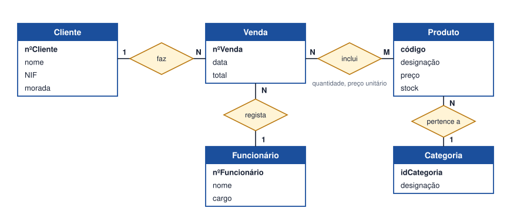

Tema 12 · Modelação de dados
Modelo Entidade-Relacionamento: consolidação
Exercício de consolidação
Neste tema consolida-se a construção do DER, com atenção aos erros mais comuns, que ajudam a rever qualquer modelo.
Erros frequentes
| Erro | Porquê é um problema | Correção |
|---|---|---|
| Atributo em vez de entidade (por exemplo, «categoria» como texto no Produto) | O mesmo texto repete-se e escreve-se de formas diferentes. | Criar a entidade Categoria e um relacionamento. |
| Relacionamento N:M sem resolver | Impede guardar dados da ligação (quantidade, preço). | Criar entidade associativa ou atributos do relacionamento. |
| Entidade sem identificador | Não se distingue uma ocorrência de outra. | Definir um identificador. |
| Cardinalidade trocada | Modelo diz o contrário do negócio. | Ler o relacionamento nos dois sentidos. |
| Dados repetidos (nome do cliente na Venda) | Inconsistência quando o nome muda. | Manter só na entidade Cliente. |
| Atributo derivado guardado (total calculado a mão) | Pode deixar de coincidir com as linhas da venda. | Calcular a partir das linhas, ou aceitar o total como dado de histórico. |
Lista de verificação final
- Cada requisito de dados aparece no modelo?
- Cada entidade tem identificador?
- Cada relacionamento tem nome e cardinalidade nos dois lados?
- Os N:M estão resolvidos?
- Há dados repetidos?
Atividade
Elaborar e corrigir o DER de um sistema de vendas
Uma loja descreve o seu funcionamento assim: «Os clientes fazem vendas. Cada venda tem um número, uma data e um total. Numa venda são vendidos vários produtos, e cada produto pode aparecer em muitas vendas; interessa guardar a quantidade vendida. Cada venda é registada por um funcionário. Cada produto pertence a uma categoria.»
Um colega apresentou um DER com estes defeitos:
- Venda não tem identificador.
- Venda e Produto estão ligados por uma linha N:M sem atributos, e a quantidade não aparece.
- A categoria está escrita como texto dentro de Produto.
- O nome do cliente está repetido em Venda.
- O funcionário não aparece.
Elabore o DER correto e explique cada correção.
Ver proposta de resolução

| Defeito | Correção |
|---|---|
| 1. Venda sem identificador | Acrescentar nºVenda. |
| 2. N:M sem atributos | Manter o relacionamento Venda–Produto «inclui» com os atributos quantidade e preço unitário. |
| 3. Categoria como texto | Criar a entidade Categoria e o relacionamento Produto N:1 Categoria. |
| 4. Nome do cliente repetido | Retirar de Venda e ligar Cliente 1:N Venda. |
| 5. Funcionário em falta | Criar Funcionário e o relacionamento Funcionário 1:N Venda. |
Em resumo
- Rever um DER é tão importante como construí-lo.
- Os erros típicos são atributos que deviam ser entidades, N:M por resolver e dados repetidos.
- Ler cada relacionamento nos dois sentidos é a melhor forma de detetar cardinalidades erradas.